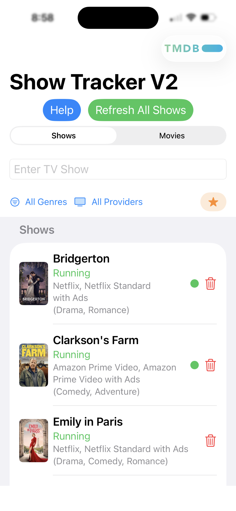
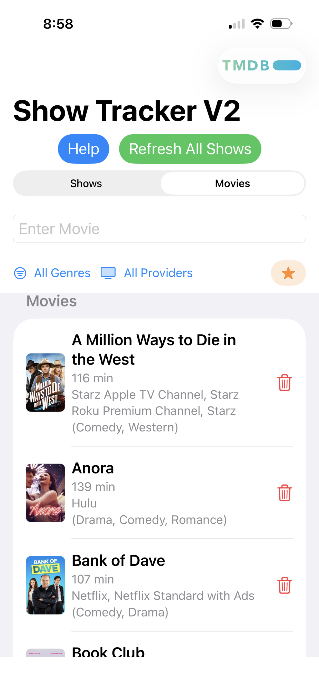
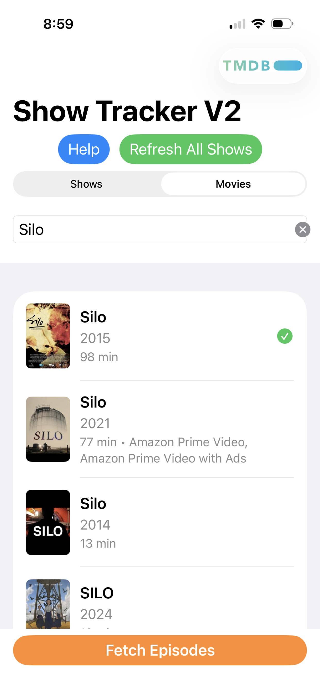
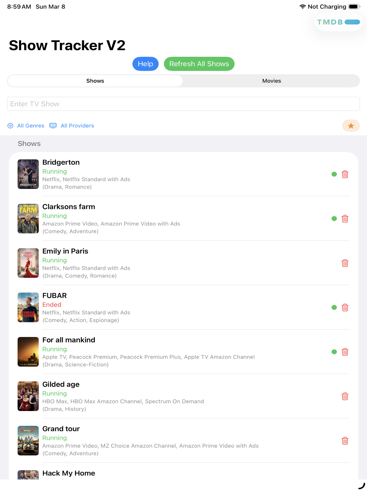

Search any TV show or movie, track your episodes, see where to stream — and never lose your place again. Simple, fast, and syncs across all your devices via iCloud.


No complicated setup. No accounts. Just open the app and start tracking.
Type a show or movie title and press Return. Pick your result — complete with poster, year, runtime, and streaming providers.
Tap Fetch Episodes to download all seasons and episodes automatically.
Tap an episode to mark it watched. A green dot means you still have episodes to catch up on.
Every saved show displays its poster, name, running status, streaming providers, and genre — all on one clean list. Filter by genre or provider to find exactly what you're looking for.
Switch to the Movies tab to build your own personal movie library. Every movie shows its runtime, streaming providers, and genre — so you always know where to watch and what's in your queue.
Type a title and get back a rich list of results — with posters, years, runtime, and streaming providers. If multiple results match, scroll and pick the right one, then fetch it.

Show Tracker is optimized for both. The iPad layout gives you more room to browse your full show and movie libraries — same features, more space.

Track both TV series and movies in the same app. A simple tab at the top switches between them.
Every show and movie in your list displays its poster art — making your library easy to scan at a glance.
See exactly where to watch — Netflix, Apple TV+, Prime, Max, Hulu, and more — right in the list for every title.
Your watchlist syncs across all your devices automatically via iCloud. Start on your iPhone, continue on your iPad.
New season just dropped? Tap Refresh All Shows to pull in the latest episodes and metadata for everything in your list.
Mark your favorite shows and movies to quickly find what you care about most.
Free to download. No account needed. Works great on iPhone and iPad.
Download on the App Store